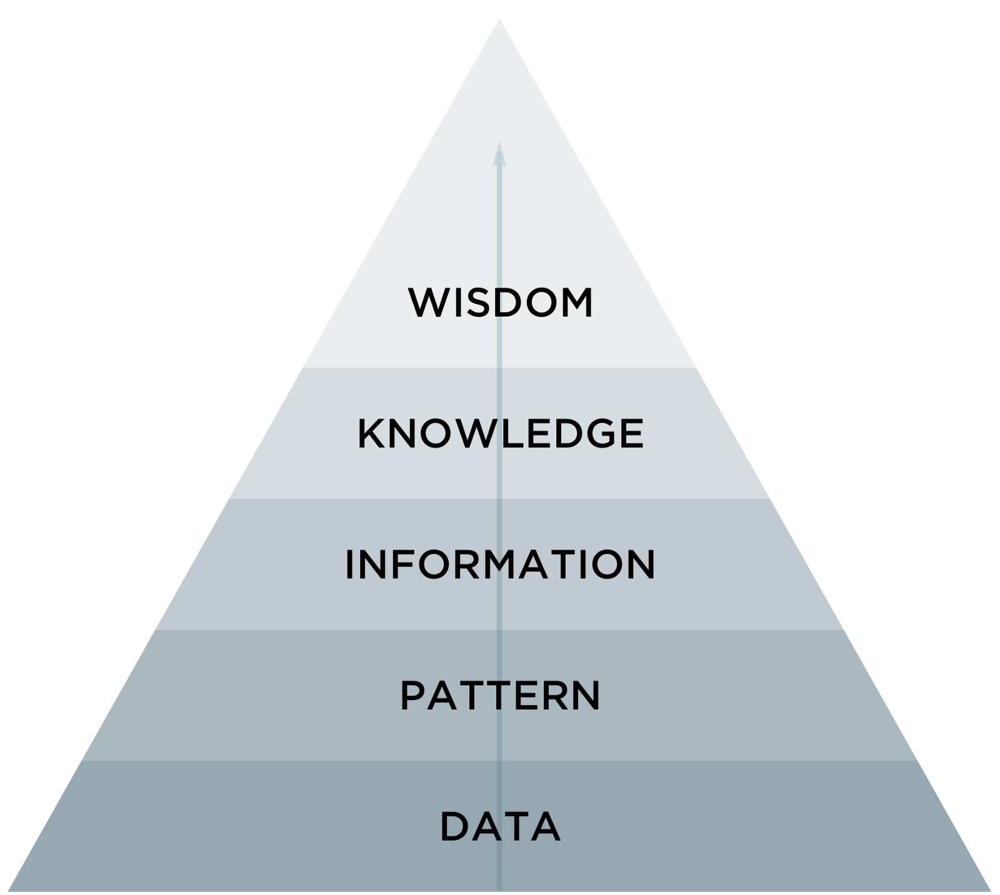

- Introdução
- Dados
- Big Data
- Coleta de Dados
- Análise e Mineração de Dados
- Informação
- Conhecimento
- Relevância para as organizações
Gabriel D'Luca, Vitor Lima
(IF973) Fundamentos de Sistemas de Informação
agosto – 2017
Roteiro
Introdução

Introdução
- São observações documentadas ou resultados de uma medição
- Empresas já contratavam times de estatísticos e atuários desde o início
do século passado - Hoje, quase todas as instituições coletam dados sobre seus processos e usuários
Introdução
- Ao contrário dos dados, é composta por elementos mais palpáveis
Dados brutos- Passam por diversas manipulações
Introdução

Introdução
Introdução
Titulo da seção
Referências
SETZER, V. W. (1999). Dado, Conhecimento, Informação e Competência. Disponível em: www.ime.usp.br/~vwsetzer/datagrama.html.
Acesso em: 20 ago. 2017.
HJORLAND, B. CAPURRO, R. (2007). O conceito de informação. Disponível em: https://www.theguardian.com/news/datablog/2012/
dec/19/big-data-study-digital-universe-global-volume. Acesso em: 20 ago. 2017.
PERRELLI, H. (2017). Sistemas de Informação para Iniciantes: tudo o que você queria saber mas tinha vergonha de perguntar. 1ª ed.